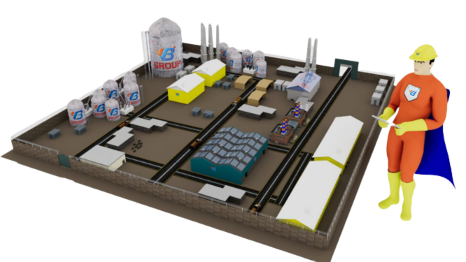

VB Engineering takes pride in its team of expert professionals who specialize in conducting Electrical Hazard and Operability (HAZOP) studies. Our team comprises highly skilled and experienced individuals with a deep understanding of electrical systems and the associated hazards and operability challenges.
The aim of the Electrical System Hazard and Operability Study (E-HAZOP) is to comprehensively pinpoint potential hazards and operability challenges linked to the electrical network. This review will specifically address the high voltage distribution system, focusing on identifying and addressing associated issues.
The electrical hazop study will be conducted based on the available single line diagrams (SLDs) during the E-HAZOP review. In addition to the SLDs, the study will refer to relevant equipment specifications, layouts, and other documentation listed in the subsequent sections. By utilizing these resources, we ensure a comprehensive and accurate analysis of your power system, enabling us to identify potential hazards and operability issues effectively.
Our approach involves generating a comprehensive set of deviations from the design intent, carefully examining the causes and consequences associated with each deviation. We identify existing safeguards within the design that can prevent or mitigate the hazards. If necessary, our team will consider additional safeguards to further mitigate the identified hazards. These additional safeguards will be listed as recommendations for the design team or the project team to consider.
At VB Engineering, we prioritize the systematic application of this technique to all components of the system. By doing so, we ensure that safety and operability issues across the entire system are thoroughly identified and addressed. Our team is dedicated to conducting a comprehensive analysis that leaves no stone unturned, providing you with a comprehensive understanding of potential risks and necessary mitigation measures.
More Features

The facilities will be divided into several sub-systems, taking into account the system design and its complexity. Specifically, the electrical sub-system will be further sectionalized into manageable discussion nodes based on the facilitator's expertise and input from the team. These study nodes may include power generators, the main electrical switchboard, sub-stations, fire suppression systems, emergency/uninterruptible power supply, load shedding systems, and more.
Each selected node will be assigned a unique reference number for identification purposes. The VB Engineering team will collectively determine the intention or purpose of each node, and the operability limits will be carefully recorded. This systematic approach ensures that each aspect of the electrical sub-system is thoroughly examined, allowing for a comprehensive analysis and identification of potential hazards and operability issues.
SYSOP (System Operability)
During the review process, we carefully assess the functioning and operation of the system and its components. This includes a comprehensive analysis of the protection and control schemes in place. We pay particular attention to identifying any deficiencies in the design that may impact the operability and maintainability of the system.
Our team thoroughly examines the protection and control schemes to ensure they are designed to effectively safeguard the system and its components. We identify any potential shortcomings or areas for improvement that could impact the system's operability and maintainability.
By conducting this analysis, we aim to enhance the overall performance, reliability, and safety of the system. Our goal is to identify and address any design deficiencies, ensuring that the system operates optimally and can be effectively maintained throughout its lifecycle.
SAFAN (Safety Analysis)
The safety of all individuals who may come into contact with the electrical installation/system is a top priority during our review process. Our team thoroughly assesses potential situations where people, including outside persons, non-electrical company staff and contractors, and electrical company staff and contractors, might be exposed to danger.
We recognize that the risks associated with an electrical installation are closely tied to the level of access or exposure permitted to the electrical equipment. Therefore, we carefully evaluate the degree of access and exposure allowed to ensure that appropriate safety measures are in place.
By conducting this assessment, we aim to identify any potential hazards or risks that could pose a danger to individuals. This allows us to recommend and implement effective safety measures to mitigate these risks and ensure the well-being of all individuals who interact with the electrical installation/system.
SAFOP (Safe Operability )
The VB Engineering team diligently identifies and agrees upon the exposure situations permitted in the design. We carefully assess the design to determine if there are any mitigations or safeguards in place to address potential risks and hazards. If such mitigations or safeguards exist, we make sure to note them for the project team to take appropriate action.
Our objective is to ensure that the exposure situations within the design align with industry standards and best practices for safety. By identifying any necessary mitigations or safeguards, we provide valuable recommendations to the project team, enabling them to implement the required measures to enhance safety and mitigate risks effectively.
OPTAN (Operator Task Analysis)
In this analysis, we conduct a thorough evaluation of the electrical installation to identify the specific tasks that operational staff will be required to perform. VB Engineering team carefully assess the operational requirements and responsibilities associated with the electrical system.
By understanding the tasks that operational staff will need to carry out, we can ensure that the electrical installation is designed and configured in a way that supports efficient and safe operations. This evaluation helps us identify any potential challenges or areas where improvements can be made to enhance the ease of operation and maintenance.
Our goal is to optimize the electrical installation to align with the needs of operational staff, ensuring that they can effectively and safely perform their tasks. We consider factors such as accessibility, ease of use, and the availability of necessary tools and documentation.
INPUTS REQUIRED FOR CONDUCTING E-HAZOP STUDY:
The following documents shall be made available to the team during the sessions for review:
1. Single line diagrams (required): These diagrams provide an overview of the electrical distribution system.
2. Equipment room layout: This document illustrates the layout of equipment within the designated rooms.
3. Typical electrical installation details: These details include information about cabinets and other electrical installations.
4. Normal and essential load list: This list outlines the normal and essential loads that the system is designed to support.
5. Earthing and lightning philosophy: This document describes the approach and philosophy for earthing and lightning protection within the system.
6. Black start/load shedding requirements: This information pertains to the interfaces with the main PGU contractor and outlines the requirements for black start and load shedding procedures.
7. Overall cable routing layouts: These layouts provide an overview of the cable routing throughout the system.
8. Description of ESD/F&G interfaces with electrical system: This document explains the interfaces between the electrical system and the Emergency Shutdown (ESD) and Fire & Gas (F&G) systems, including cause and effect relationships.
9. Typical electrical protections and metering diagrams: These diagrams illustrate the typical electrical protection schemes and, if available, metering arrangements.
By providing these documents to the team, we ensure that all relevant information is accessible during the review sessions. This facilitates a comprehensive analysis and enables the team to identify any potential issues or areas for improvement in the electrical system.
Hazop study report and deliverables
Upon completion of the electrical HAZOP study, VB Engineering will provide a comprehensive report that outlines the findings, including gap identification and recommended remedial actions. This detailed report serves as a valuable reference document for understanding the hazards and operability issues associated with the electrical system. If the team determines that the existing protective measures are inadequate, they will provide recommendations to address this concern. These recommendations aim to eliminate or mitigate any residual hazards that are deemed significant.
The team's recommendations may take various forms, including design changes, adjustments to the operation and maintenance philosophy, or requests for further clarification on the design basis. By proposing design changes, the team seeks to enhance the protective measures and strengthen the overall safety of the system. These changes may involve modifications to equipment, system configurations, or protective device settings to align with industry standards and best practices.
The VB Engineering team identifies safeguards that are effective in preventing or controlling the problems identified during our analysis. We prioritize safeguards that are independent of the initial cause of the deviation, ensuring their reliability and effectiveness in mitigating risks.
VB Engineering team carefully evaluates and selects safeguards that can provide robust protection and control, regardless of the root cause of the deviation. By focusing on these independent safeguards, we ensure that they can effectively address the identified problems and minimize the potential for recurrence.
We consider a range of safeguards, including engineering controls, administrative controls, and personal protective equipment, depending on the specific requirements of the situation. Our goal is to implement safeguards that are practical, reliable, and tailored to your unique needs.
Additionally, the team may suggest adjustments to the operation and maintenance philosophy to ensure that proper procedures are in place for ongoing safety and reliability. This may include implementing regular inspections, maintenance routines, and training programs to mitigate potential hazards and improve system performance.
In some cases, the team may request further clarification on the design basis to gain a deeper understanding of the system's intended functionality and safety requirements. This allows for more accurate and tailored recommendations to address any identified gaps or deficiencies.
At VB Engineering, our objective is to deliver comprehensive e-hazop study that provide valuable insights and actionable recommendations. We prioritize the safety, reliability, and performance of your electrical infrastructure, ensuring compliance with industry standards and regulations.
Trust VB Engineering to conduct thorough electrical hazop studies that address your specific objectives and help you achieve a safer, more reliable, and efficient electrical network. Contact us today to discuss your requirements and let us assist you in optimizing the performance and resilience of your power systems.